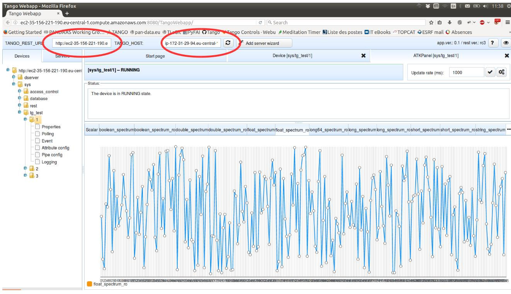

Amazon Cloud¶
The latest version of TANGO 9.2.5a is available on the cloud.
An Amazon image running Ubuntu 16.04 with TANGO 9.2.5a is pre-installed and configured to start up at boot time. The image is public and can be found under this id and region:
AMI-ID: ami-d503cfba
region=EU-Frankfurt
You can find out how to do this here.
Launch VM with this image and you will have TANGO 9.2.5 + PyTango 9.2.0 up and running including the TANGO REST API so you can access it from internet.
Note
the TANGO_HOST is the private IP address of the VM.
This means the TANGO database and device servers are not accessible from the internet but only on the VM or set of VMs which share the same VPN. This can be seen as a security feature. Use the REST api and TANGO security to open up access to the device servers you want to expose.
To experiment with the REST api, start an instance of the AMI image on Amazon cloud.
You can connect to the TangoWebApp as follows:
- point your browser to this url:
http://ec2-35-157-86-137.eu-central-1.compute.amazonaws.com:8080/TangoWebapp/
- click on cancel on the popup login window
- set the TANGO_REST_URL to
http://ec2-35-157-86-137.eu-central-1.compute.amazonaws.com:8080/tango/restNote
NO spaces before or after and no quotes
- set the TANGO_HOST to
ip-172-31-29-94.eu-central-1.compute.internal:10000Note
NO spaces or quotes otherwise it won’t work!
- click on the refresh button to the right of the TANGO_HOST field
- login as user=tango-cs and pw=tango when prompted
Note
If you do not get a new prompt for user name and pwd from the host ec2-35-156-147-163.eu-central-1.compute.amazonaws.com then the WebApp is down and it won’t work.
- expand the tree of devices at the top left of the application
See picture below to find out more. You should be able to play with the TangoTest device sys/tg_test/1
To see the running DEMO, please, follow the link.